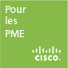

-
- Posted by admin
- 04 October 2012
- Uncategorized
L'offre Private Cloud Computing d'OVH, aussi connu sous le nom de PCC, vient de subir un lifting pour 2013.
Les grandes nouveautés sont les suivantes :
- Diminution par 4 des prix du stockage, exemple 1.2To passe de 159€/mois à 59€/mois
- Espace de stockage centralisé HA via NFS / CIFS
- vSphere 5.1 (Disponible en Novembre)
- Switch virtuel Cisco Nexus 1000v pour permettre la mise en place de VLAN
- vShield Egde pour permettre un VPN de VLAN-to-Site
La diminution du prix du stockage est un point important. Elle va en effet nous permettre de vous proposez des infrastructures encore plus compétitive!
L'ouverture des NAS-HA permettra de proposer des infrastructures encore plus simple! Il est intéressant de rappeler qu'un espace de stockage NAS-HA est disponible depuis le réseau des serveurs dédiés comme du Private Cloud Computing.L'offre OVH évolue sans cesse, n'hésitez pas à nous contacter pour bénéficier de notre expertise et de nos conseils !
-
- Posted by admin
- 01 November 2011
- Infrastructure
 Les solutions de stockage sont nombreuses sur le marché. Nous pouvons lister :
Les solutions de stockage sont nombreuses sur le marché. Nous pouvons lister :- Les Direct Access Storage comme les disques dur USB,
- Les Network Access Storage accessibles depuis un client réseau,
- Les Storage Area Network pour les solutions de grande entreprises.
Chaque solution a bien évidemment ses avantages et inconvénients.
Le DAS sera peu onéreux et ne nécessite aucune compétence particulière. En contre partie, cette solution n'est pas qualifié de pérenne et n'est pas adaptée à la tolérance de panne.
Les NAS représentent en général la solution la plus adapté aux entreprises de type TPE / PME.
Quant au SAN, ceux-ci ne sont exploités que pour répondre à des besoins très spécifiques comme la virtualisation car ils apportent de meilleures performances. Les couts sont de ce fait plus importants.Pour répondre aux problématiques de stockage et de sauvegarde de petites et moyennes structures, détaillons le produit NetGear ReadyNAS Duo qui répond parfaitement aux besoins des TPE / PME:
- Coût abordable (il faut compter environ 100€ le boitier),
- Tolérance de pannes grâce à la technologie RAID1,
- Sauvegarde externalisé possible,
- Performance accrue avec support du réseau GBe (Gigabit).
Ce type de modèle vous permettra de répondre à vos problématiques de stockage et de sauvegarde des données dans une petite entreprise. Nous pouvons également citer les modèles Synology qui offrent des performances similaires pour les TPE / PME qui souhaitent centraliser leur données et y accéder facilement.
N'hésitez pas à nous contacter pour obtenir une solution adaptée à vos problématiques de stockage.
-
- Posted by admin
- 08 July 2011
- Infrastructure
Cisco a réalisé un site qui contient des vidéos parodiques de la vie de tous les jours dans les TPE / PME.
Il y a trois courtes vidéos qui sont assez sympa à regardées :
Rendez-vous sur lespetitssecretsbycisco.com où il y a une jolie machine Nespresso à gagner.
Le cadeau du concours est-il aussi parodique des TPE / PME ?Par rappel, nos équipes sont certifiées sur les technologies d'infrastructure réseau comme Cisco & Microsoft.
L'installation de matériel Cisco ne nécessite pas d'avoir une grande structure, mais simplement une entreprise désireuse de mettre en place des produits de qualité assurée des fonctionnalités avancées. -
- Posted by admin
- 24 June 2011
- Gestion
Les DSI ou encore Directeurs des Systèmes d'Informations occupent un poste devenu stratégique dont le coût n'est pas négligeable.
En fonction des entreprises, les tâches liées à ce poste ne sont pas les mêmes.
Elles dépendent de la taille de l'entreprise, mais aussi de son coeur de métier.
Une entreprise de 100 salariés réalisant de l'aide à domicile n'aura pas à faire les mêmes choix techniques qu'une entreprise de 20 salariés réalisant des travaux d'infographie.Le Directeur des Systèmes d'Informations peut réaliser les missions suivantes :
- Anticiper les évolutions imposées par la stratégie de l'entreprise, les évolutions du contexte, les lois,
- Apporter une assistance à la maîtrise d'ouvrage et non pas seulement de maîtrise d'œuvre,
- Réaliser des commandes de projets auprès des prestataires ou des équipes internes,
- Prendre des décisions techniques en fonction du contexte de l'entreprise.
L'avantage d'avoir une personne externe dédiée à la gestion de votre SI est avant tout financier. Cela ne represente plus une charge salariale fixe avec des charges, mais une prestation que l'on peut facilement adapter à un forfait à faible coût.
En faisant appel à nous, vous aurez un suivi régulier de toutes les étapes clés de la vie de votre entreprise.
- L'installation de votre parc,
- Une aide à la décision dans les choix stratégiques liés à la technique,
- Un échange régulier pour vous permettre d'anticiper.
Pour résumer la situation, nous sommes là pour vous accompagner, vous aider à prendre les bonnes décisions. Nous restons présent en cas de besoin urgent et nous vous déléguons des tâches liées à la gestion des SI qui ne font pas partie de votre métier.
N'hésitez pas à nous contacter.
-
- Posted by admin
- 25 May 2011
- Infrastructure
Depuis peu, les FAI pour les particuliers proposent des offres où les communications vers fixe & mobile sont illimités.
Au niveau des offres professionnelles, cela fait maintenant plusieurs mois qu'OVH propose ce type de service qui inclus la redirection d'appel en cas d'absence, un standard téléphonique sur chacun des postes, la réalisation de conférences téléphoniques, la gestion d'un carnet d'adresse commun à tous les téléphones.
Afin d'avoir une idée de ce que vous pourriez avoir, voici un récapitulatif des tarifications :
- Ligne SIP : 9.99€ de frais d'installation et 0.99€ / mois
- Téléphone ST 2030 : 9.99€ de frais d'installation et 0.99€ / mois
- Téléphone GXV 3000 : 9.99€ de frais d'installation et 0.99€ / mois
- Forfait mobile & fixe illimité : 10.00€ / mois
- Numéro de téléphone pour réaliser des conférences : 1.00€ / mois
Prenons un exemple, si vous avez besoin de 5 numéros de téléphone :
- 4 Téléphone ST 2030 : 39.96€ de frais d'installation et 3.96€ / mois
- 1 Téléphone GXV 3000 : 9.99€ de frais d'installation et 0.99€ / mois
- 5 Forfait mobile & fixe illimité : 50.00€ / mois
Au total : 49.95€ de frais d'installation et 54.95€ / mois pour 5 lignes téléphoniques professionnelles & illimitées.
Le réseau téléphonique OVH est utilisé par OVH même, ils ont donc tout intérêt à mettre tout en œuvre pour que ce service soit opérationnel 24h/24 & 7j/7.
Pour toutes informations complémentaires, n'hésitez pas à nous contacter,
Aussi, si vous souhaitez mettre en place un réseau de qualité au sein de votre entreprise, nous sommes à même de répondre à vos besoins. -
- Posted by admin
- 18 April 2011
- Outils
Lorsque nous gérons les parcs informatiques de nos clients, nous mettons en œuvre tous les moyens possibles pour vous apporter une assistance et un encadrement à la hauteur de vos attentes.
Ainsi, afin de maintenir efficacement et rapidement vos machines, nous nous appuyons sur l'outil LogMeIn pour intervenir à distance et résoudre vos dysfonctionnements mineurs ou bloquants.
Nous nous chargeons d'installer et de configurer l'outil sur chacune de vos stations de travail, afin que vous n'ayez aucune manipulation technique à réaliser.
Voici les fonctionnalités intéressantes que nous pouvons retrouver:
- Contrôle à distance
- Transfert de fichiers de manière simple et sécurisée
- Partage de fichiers
- Alertes et surveillance permettant l'édition de rapports et d'analyses avancées
Il nous est alors possible de prendre la main sur votre poste depuis nos bureaux, depuis une station nomade, ou bien encore depuis un WebPhone grâce à l'application LogMeIn Ignition prévue à cet effet.
Alors n'hésitez plus, faites confiance à Turnaway et dédiez la maintenance de votre parc informatique à un professionnel de l'informatique.
-
- Posted by admin
- 31 March 2011
- Infrastructure
La mise en place de CDN ( Content Delivery Network ) signifie mettre en place des serveurs de fichiers capables de fournir du contenu sur HTTP.
Au niveau vidéo, différents services peuvent être associés comme le timeshifting, l'encodage à la volée ou la mise en place d'URL spécifiques pour protéger vos fichiers.La principale difficulté rencontrée par les CDN Vidéo concerne le prix de la bande passante.
Les fichiers vidéos sont en général de taille assez importante, et lorsque le site rencontre un certain succès, il faut que l'infrastructure soit capable de diffuser du contenu à une vitesse relativement élevée.Afin de vous proposez des services de qualité, nous associons notre expertise à l'infrastructure OVH.
Le Private Cloud OVH permet de réaliser un CDN Vidéo à très faible coût.
Avec un forfait incluant 30To de données et au delà, des coûts de 0.03€/Go, vous ne trouverez pas moins cher ailleurs, tout en sachant que l'infrastructure permet d'obtenir jusqu'à 40Gbps.Lorsque vous réalisez une solution de Content Delivery Network, cela doit être fait en envisageant de couvrir le réseau IPv4 & IPv6 tout en utilisant de la Haute Disponibilité.
Si vous avez besoin de plus d'information ou que vous souhaitez mettre en place un CDN de Haute Disponibilité, n’hésitez pas à prendre contact avez nous.
-
- Posted by admin
- 22 March 2011
- Outils
OpenUploads est un outil open source qui permet de mettre en place une plateforme d'échange de fichier public ou privé.
Vous l'aurez compris, vous pouvez mettre à disposition de vos collaborateurs un service comme YouSendIt ou MegaUpload en maitrisant le stockage des fichiers et gratuit d'utilisation.Cela peut-être intéressant pour les entreprises qui ont besoin de partager des fichiers via Internet sans mettre en place des solutions complexes comme un serveur FTP.
Voici les principales fonctionnalités :
- Contrôle d'accès par groupe.
- Plusieurs type d'authentification utilisateur : Base de donnée isolée, annuaire LDAP ou Microsoft Active Directory.
- Différents plugins pour étendre les fonctionnalités : Protection par mot de passe, Captcha, Envoi d'email, Bannissement d'IP.
- Différents systèmes de gestion base de données supportées ( MySQL, PostGRE, Flat file ).
Pour installer OpenUploads, il suffit de disposer d'un serveur PHP et d'une heure de votre temps.
Afin de réaliser des transferts de fichiers sécurisés, vous pouvez opter pour l'utilisation du protocole HTTPS.. -
- Posted by admin
- 21 March 2011
- Infrastructure
La mise en place de solution Haute Disponibilité est une réalité qu'il est possible d'atteindre grâce à OVH et à notre expertise.
Plusieurs solutions sont possibles en fonction de votre besoin et de votre budget :
- Serveurs ESXi - EG BestOf à partir de 199€ / mois
- Serveurs ESXi - MG BestOf à partir de 298€ / mois
- Serveurs ESXi - HG BestOf à partir de 598€ / mois
- Utilisation du Private Cloud Computing : 500€ / mois
Grâce à ces solutions, nous pouvons réaliser de la répartition de charge et atteindre la haute disponibilité de vos services.
Pour réaliser ces infrastructures, nous pouvons utiliser des solutions de répartition de charge exclusivement logiciels tels que LVS + Keepalived ou materiels tel que le Cisco ACE.
Si vous avez besoin de plus d'information ou que vous souhaitez mettre en place des solutions de Haute Disponibilité, n’hésitez pas à prendre contact avez nous.
-
- Posted by admin
- 08 February 2011
- Outils

Lorsque nous travaillons avec nos clients, nous souhaitons optimiser tous les points de sécurité. C'est pour cela que nous utilisons un générateur de mot de passe aléatoire et complexe.
Sachant que nous travaillons de manière transparente, voici le générateur utilisé : projets.armetiz.info/password
Celui-ci crée de manière aléatoire des mots de passe de 10 caractères, contenant lettre majuscule, minuscule ainsi que des chiffres. Les symboles ne sont pas utilisés.Il n'y a aucune option possible. L'intérêt étant d'avoir rapidement un mot de passe complexe. Les lettres portant à confusion ne sont pas non plus utilisées : o, O, 0, i, I, l, L.

{kind=link}
{kind=link}
{kind=link}
{kind=link}
Wozbe
Wozbe réalise vos produits & services Web en tenant compte de vos problématiques & objectifs business.